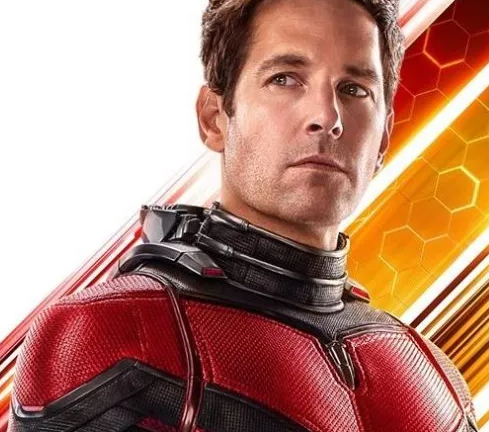

Scott Lang

| Full Name | Scott Lang |
|---|---|
| Aliases | Ant-Man, World's Greatest Grandma, Tic-Tac, Regular-Sized-Man |
| Species | Human |
| Portrayed By | Paul Rudd |
| Affiliation | The Avengers, X-Con Security Consultants |
| First MCU Appearance | Ant Man (2015) |
| Skills & Abilities |
|
Scott Lang is a former electrical engineer turned small-time criminal who becomes one of Earth’s unlikeliest heroes. Unlike many Avengers, Scott isn’t a billionaire, soldier, or god — he’s a flawed but good-hearted dad trying to make things right for his daughter.
Recruited by scientist Hank Pym, Scott takes up the mantle of Ant-Man, using Pym Particles to shrink to insect size while increasing his strength exponentially. Over time, he evolves from reluctant recruit to trusted Avenger. Scott brings humor, humility, and emotional grounding to the MCU — often serving as the audience surrogate among larger-than-life heroes.